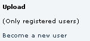
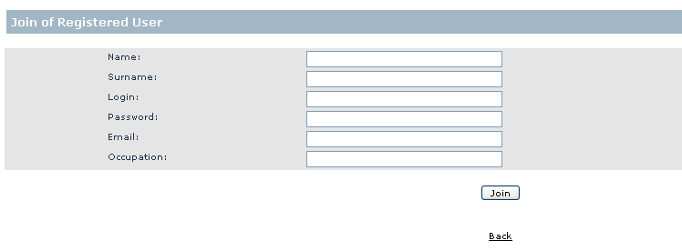
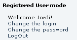

Information
Registered Users
|
Registered Users
This help is focused for the registered users on any
PlanetDR server. This help you to understand the semantic of actions
and what involves them.
- Steps to register on a PlanetDR server.
1. Access to the web
of your PlanetDR server.
2. Click over the Become a new user option as follows:

3. Introduce the required information:

4. Now, you must wait for a mail informing you that is accepted (or denied)
your registration to the PlanetDR server.
- Once you have became a new user to the PlanetDR
server you can see the following menu:

At this example, a new user called Jordi has been log in the server. The
options of this menu permit you:
- Change the login: Permit to change your login.
For example, for Jordi to George.
- Change the password: Permit to change your
password.
- LogOut: Log out of your PlanetDR session.
|